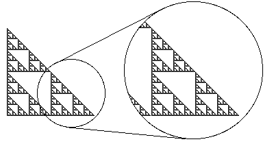
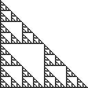

| The simplest fractals are constructed by iteration. For
example, start with a filled-in triangle and iterate this process: |
| For every filled-in triangle, connect the midpoints of the sides and
remove the middle triangle. Iterating this process produces, in the limit, the
Sierpinski Gasket. |
|
| Click the picture to repeat. |
|
| The gasket is self-similar.
That is, it is made up of smaller copies of itself. |
|  |
| We can describe the gasket as made of three copies, each
1/2 as
tall and 1/2 as wide as the original. But note a consequence of self-similarity: each
of these copies is made of three still smaller copies, so we can say the gasket is made
of nine copies each 1/4 by 1/4 of
the original, or 27 copies each 1/8 by 1/8, or ... .
Usually, we prefer the simplest description. |
 |
|
| "Big gaskets are made of little gaskets, |
| The bits into which we slice 'em. |
| And little gaskets are made of lesser gaskets |
| And so ad infinitum." |
|
| This implies fractals possess a scale ambiguity.
|